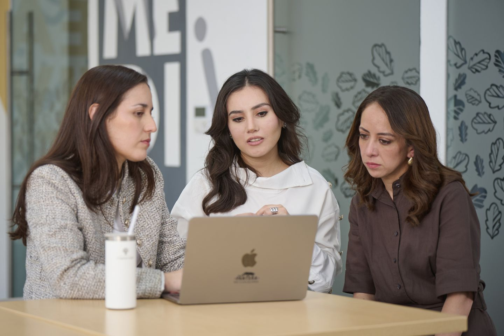

Posgrados Panamericana · Campus CDMX
Posgrados de Comunicación en CDMX
Comunica con sentido. Inspira con propósito.
En la Facultad de Comunicación de la Universidad Panamericana te acompañamos a desarrollar tu mejor versión profesional. Elige entre maestrías, especialidades y diplomados en comunicación política, institucional, de marca, publicidad, relaciones públicas y producción audiovisual.

- Programas
- 9 posgrados
- Maestrías
- 4
- Especialidades
- 2
- Diplomados
- 3
- Campus
- Ciudad de México
Sobre la Facultad
¿Qué es la Facultad de Comunicación?
La Facultad de Comunicación de la Universidad Panamericana forma profesionales que comunican con ética, criterio y sensibilidad social. Sus posgrados en CDMX te preparan para diseñar estrategias, contar historias y cuidar la reputación de instituciones, marcas y proyectos públicos, siempre al servicio del bien común.
Campañas, opinión pública, gobernanza y asuntos públicos.
Reputación, cultura organizacional, branding y relaciones públicas.
Publicidad, narrativa audiovisual, moda, entretenimiento y experiencias.
Beneficios
¿Por qué estudiar un posgrado de Comunicación en la UP?
Acompañamiento personalizado
En la UP cada alumno cuenta con un mentor cercano que lo ayuda a identificar y potenciar su talento.
Nueve caminos para especializarte
Elige entre política, marca, relaciones públicas, publicidad, producción audiovisual, moda o entretenimiento.
Formación aplicada y vinculada
Aprende con un enfoque práctico y en contacto con el sector empresarial e institucional.
Comunicación con sentido humano
Formamos comunicadores éticos que usan su voz para construir confianza y aportar al bien común.
¿Ya sabes qué quieres comunicar?
Ver los 9 programasOferta de la Facultad
Conoce nuestros programas
Compara los 9 posgrados de Comunicación en CDMX y elige el que mejor acompaña tu desarrollo profesional.
Maestría en Comunicación Política y Pública
Especialízate en campañas, opinión pública, gobernanza y asuntos públicos.
Conocer programaMaestría en Comunicación Institucional
Lidera la comunicación corporativa, la cultura organizacional, la reputación y el manejo de crisis.
Conocer programaMaestría en Comunicaciones de Marca
Diseña estrategias de branding, reputación, contenidos y comunicación comercial.
Conocer programaMaestría en Narrativa y Producción Audiovisual
Crea historias y contenidos para cine, video, animación y plataformas digitales.
Conocer programaEspecialidad en Publicidad y Creación de Contenidos
Desarrolla estrategias creativas para marcas, plataformas y audiencias.
Conocer programaEspecialidad en Relaciones Públicas y Reputación de Marca
Gestiona medios, audiencias, reputación y comunicación digital.
Conocer programaDiplomado en Comunicación Política
Aprende sobre campañas electorales, opinión pública, narrativa e imagen política.
Conocer programaDiplomado en Fashion Branding, Digital & Innovation
Integra estrategia de marca, moda, comunicación digital, innovación y sostenibilidad.
Conocer programaDiplomado en Creación y Gestión de Proyectos de Entretenimiento y Experiencias
Diseña, produce y administra experiencias y proyectos creativos.
Conocer programa
Admisiones
¿Cómo ingresar a un posgrado de Comunicación?
- Elige el programa que mejor se ajusta a tus metas profesionales.
- Solicita información con el equipo de admisiones.
- Entrega tu documentación según los requisitos de tu programa.
- Completa el proceso de admisión de tu programa.
- Confirma tu inscripción y prepárate para iniciar.
Requisitos de admisiónVarían según el grado (maestría, especialidad o diplomado) y el programa. PENDIENTE
Becas y convenios
Apoyo financiero
Queremos acompañarte también en la planeación de tu inversión. Conoce las opciones disponibles para tu programa.
Dudas frecuentes
Preguntas frecuentes
Cuatro maestrías, dos especialidades y tres diplomados en comunicación política, institucional, de marca, publicidad, relaciones públicas, producción audiovisual, moda y entretenimiento.
La maestría ofrece la formación más amplia y profunda; la especialidad se enfoca en un área concreta; el diplomado te permite actualizarte en un tema específico. PENDIENTE Duración de cada grado, por confirmar.
Cada página de programa indica su validez oficial. PENDIENTE Números de RVOE, por confirmar.
Los requisitos varían según el programa. Consulta la página de cada posgrado o solicita información al equipo de admisiones.
Depende de cada programa. Por ejemplo, el Diplomado en Comunicación Política 2026 es híbrido. Consulta la modalidad en la página de cada posgrado.
PENDIENTE Por confirmar con la UP.
¿No encontraste tu respuesta?